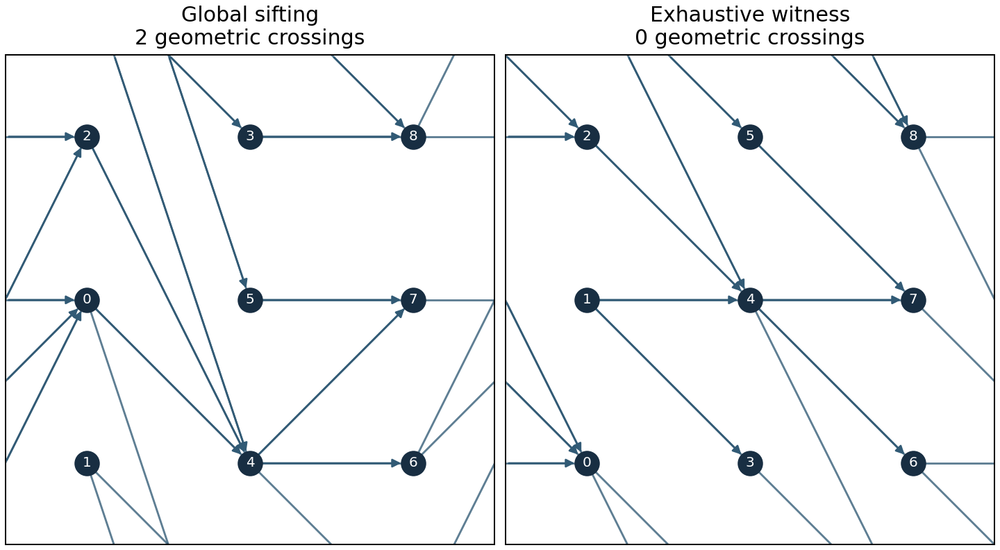
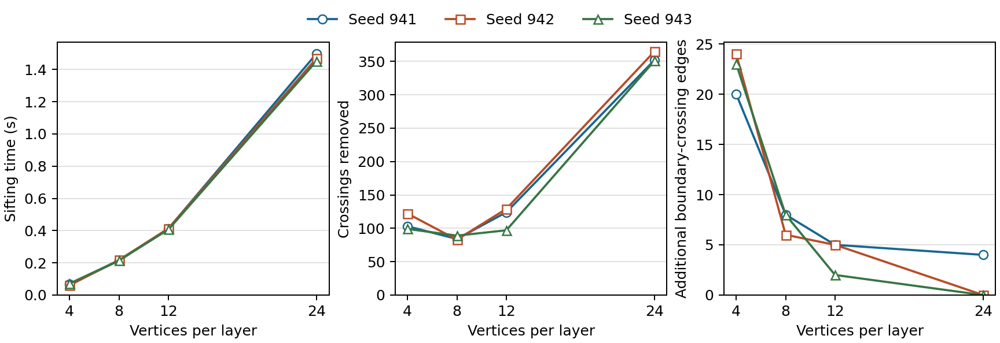

全体比較
合成入力で既定トーラス・杉山型・放射型・dotが完走
合成入力でトーラスの幾何交差がdotより少ない
公開データ追試でトーラスが完走。dotは24件完走
| 比較対象 | トーラスが少ない | 同数 | トーラスが多い | 差の中央値 |
|---|---|---|---|---|
| 杉山型 | 22 | 7 | 19 | 0 |
| 放射型 | 32 | 3 | 13 | −3 |
| Graphviz dot | 15 | 6 | 27 | +2 |
差はトーラスから比較対象を引いた値。合成入力は12・18・24頂点の4系列。
公開追試で両方式が完走した21件では、全件でdotの交差が少なく、トーラスの折れが少なかった。トーラスの打ち切り3件は交差数を補完していない。近傍抽出には重なりがあるため、結果を元ネットワーク単位でも集計した。 合成入力の対応集計 · 公開データの集計
工程の評価
循環階層割当 → 単位スパン化 → 層順と巻き数の決定 → 境界最適化 → 座標割当 → 描画
| 工程 | 観測結果 | 根拠 |
|---|---|---|
| 階層割当・単位スパン化 | 小規模の全列挙で階層探索を照合。16入力でダミー挿入後に単位スパン違反なし。 | 厳密照合 · 単位スパン化 |
| global sifting | radialと同じ階層・後処理・座標方式で、幾何交差は30件中22件で減少、4件で同数、4件で増加。 | 対応比較 |
| 層内方向の巻き数 | 後処理を外し、同じglobal siftingで巻き数の自由度だけを変えた。自由側は48件中44件で交差が減り、全件で境界を通る元辺が増加。 | 全試行 |
| 境界最適化・実行順 | jointは合成12件中10件で従来処理より境界通過線分が少なく、2件で同数。joint後の回転は16件中14件で境界通過線分を増やした。 | 境界比較 · 順序比較 |
| 座標割当・描画 | 通常BKに対し分割ありBKは16件中9件で折れが減少。分割なしBKは15完走中12件で減少し、1件は制約が循環した。描画領域の監査は144条件で成功。 | 座標比較 · 描画監査 |
siftingの最適性への反例

12頂点の長辺追試では、初期層順を3候補追加すると24件中15件で幾何交差が減った。折れと境界通過の非増加を求めても9件で減った。sifting時間の対応比の中央値は4.38倍。 候補別の結果と計測
入力構造による違い
入次数・出次数、無向骨格、SCCを揃えた混合弦の15入力では、弦の反転後にトーラスとdotの交差差が12件で悪化した。変化の中央値は+9だった。 方向を変えた対応集計

規模・実行時間・適用範囲
既定パイプラインの単独実行では、12・18・24頂点の合成24入力でトーラスの時間中央値は0.190秒、ピークRSS中央値は93.5 MiBだった。90・120頂点の工程診断では、階層を得た28経路のうち16経路がsiftingで打ち切られた。工程診断には代替配分の経路も含まれる。 単独実行の結果 · 工程別の打ち切り
| 条件 | 幾何交差 | 折れ | 境界通過元辺 |
|---|---|---|---|
| トーラス・siftingなし | 12,520 | 869 | 46 |
| トーラス・45秒予算 | 9,854 | 875 | 46 |
| トーラス・上限5回完走 | 3,441 | 775 | 62 |
| Graphviz dot | 2,080 | 2,364 | 0 |
トーラス3条件は実験用の代替階層に対する後段の評価。 5回上限の完走結果 · 時間予算別集計
既定モデルの大規模試行ではローカルライセンスのサイズ上限、WLSでは名前解決の失敗を記録した。求解可能な条件の時間切れと、座標制約の実行不能は別に記録した。読解・主観評価は今後の研究課題とした。 ライセンス制約の記録 · WLS接続の記録
データと再現手順
- 合成全体比較の入力 · 全体比較の生データ · 実行設定
- 公開ネットワークの入力 · 公開比較の全試行
- 実験計画 · 関連研究 · 詳細報告とWLS復旧後の実行手順
- 回帰テストのログ（1,447件通過）
巻き数の対応比較を再実行
PYTHONHASHSEED=0 ./theme2026-saku/bin/python experiments/run_torus_validation.py winding_ablation \
--previous output/torus_goal_20261126/framework --solver-seconds 4 --wall-seconds 20 \
--jobs 2 --output output/torus_winding_ablation_retake